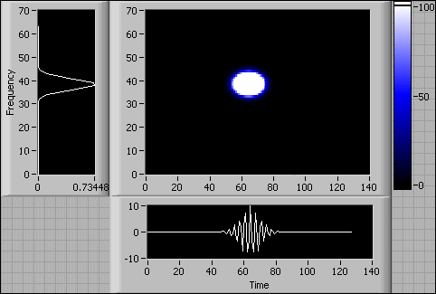

WVD Spectrogram VI
Owning Palette: Spectral Analysis VIs
Requires: Full Development System
Computes the energy distribution of the input signal in the joint time-frequency domain using the Wigner-Ville distribution (WVD) algorithm.
Details

 Add to the block diagram Add to the block diagram |
 Find on the palette Find on the palette |
|
X is the time-domain signal.
|
 |
time increment controls the time intervals of the Wigner-Ville Distribution. You express time increment in units of samples. The default is 1. For example, if you sample the time waveform at fs Hz, the spacing between the rows of WVD Spectrogram {X} is time increment/fs seconds.
Increasing time increment decreases the computation time and reduces memory requirements but also reduces time-domain resolution. Decreasing time increment improves time-domain resolution but increases the computation time and memory requirements.
|
|
WVD Spectrogram {X} is a 2D array that describes the energy distribution of X in the joint time-frequency domain.
|
 |
error returns any error or warning from the VI. You can wire error to the Error Cluster From Error Code VI to convert the error code or warning into an error cluster.
|
For a discrete signal X, with an analytic associate of Z, the following equation defines the Wigner-Ville distribution of the analytic associate, WVDZ(n, f):
where n is the index in the time domain, f is the index in the frequency domain, and the analytic associate Z is X + i*H[X], where H[X] is the Hilbert Transform of X.
The following front panel shows the WVD spectrogram and the power spectrum of a 128-point Gaussian-modulated sine pattern. The time increment is 1.

A smaller time increment uses more computation time and more memory, and consequently leads to a finer time-domain resolution. Thus, you can use the time increment to balance between the cost and the resolution.
The WVD has many properties you can use for signal analysis, such as marginal properties, the time marginal condition, the frequency marginal condition, the mean instantaneous frequency, the group delay property, and the time and frequency shift invariance. Refer to Introduction to Time Frequency and Wavelet Transforms in the Signal Processing Related Documentation topic for more information about these properties.
The WVD has the best joint time-frequency resolution of all the quadratic joint time-frequency analysis methods. However, the cross-term artifacts from a multi-component signal degrade the readability of the time-frequency representation and limits the usefulness of the WVD. The following graph shows a signal composed of two Gaussian-modulated sine patterns. The frequency of the first sine wave is 250 Hz, and the frequency of the second sine wave is 125 Hz. The time centers of the first and second sine waves are 0.075 s and 0.18 s, respectively.
Ideally, the signal has only two atoms in the time-frequency domain. However, as a result of the WVD algorithm, the WVD of the signal contains cross-term artifacts, as shown in the following graph.
Use the LabVIEW Advanced Signal Processing Toolkit for more joint-time frequency analysis methods such as, STFT, Gabor Spectrogram, Cohen, Choi-Williams Distribution, and Cone-Shape Distribution.